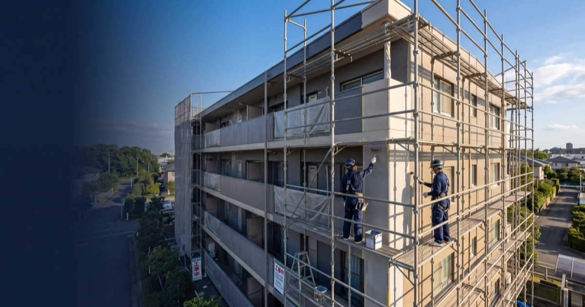

01
建築物診断調査
正しい診断が、正しい修繕につながる。
打診・目視・赤外線など建物に合った手法で劣化を調査。修繕の優先順位と概算費用を明確にします。

Fukuoka / Kyushu — Exterior Renovation
九州の建物に、誠実な技術を。
外壁・防水・塗装。美翔は、現場から品質をつくる建築改修の専門会社です。
美翔は、2023年5月に福岡県で創業した建築改修の専門会社です。外壁改修・防水・塗装・下地補修・シーリング・タイル・左官。建物の外皮を守るための工事を、一貫して手がけています。
対応エリアは福岡を拠点に、九州全域と山口県。創業してまだ日は浅い。だからこそ、一つひとつの現場で手を抜けない。そういう緊張感と誠実さを、私たちは強みだと思っています。
建物の劣化は、早期発見と適切な施工が最もコストを抑えます。私たちは「やっておけばよかった」と言われない仕事を、毎現場で目指しています。
私たちの仕事を見る建物の外皮を守る8つの領域。診断から仕上げまで、一つの現場を一貫して受けもちます。
正しい診断が、正しい修繕につながる。
打診・目視・赤外線など建物に合った手法で劣化を調査。修繕の優先順位と概算費用を明確にします。

外壁は、建物の第一防衛線。
タイル浮き・爆裂・ひび割れに、適切な工法で対応。美観だけでなく構造体を守る本質的な改修を行います。

水を止めることは、建物を守ること。
屋上・ベランダ・開口部廻りにウレタン/シート/FRP防水を選定。内部劣化を根本から防ぎます。

正しく塗ることが、10年後の差になる。
素地調整から上塗りまで工程を丁寧に。部位に応じた塗料で耐候性と美観を両立します。

仕上げより先に、下地を正直に直す。
ひび割れ・欠損・浮きを修復。見えない部分を妥協なく整え、仕上げの効果を最大化します。

目地の隙間が、雨水の入口になる。
目地・サッシ廻りのシーリングを打ち替え・増し打ち。長期の止水性能を確保します。

浮き・剥落は、未然に防ぐのが正解。
外壁タイルの浮き・剥落を補修・貼り替え。定期的な打診調査と予防的補修で安全を守ります。

手で仕上げる、最後の一層。
モルタルの欠損補修・仕上げ塗りを手作業で。補修箇所が周囲になじむよう精度にこだわります。
外壁改修・防水・塗装の施工写真を公開しています。どんな劣化が、どのような施工でどう変わるか。写真でご確認ください。
 外壁改修
外壁改修 防水
防水 塗装
塗装 タイル
タイル 防水
防水 外壁改修
外壁改修 塗装
塗装 その他
その他 外壁改修
外壁改修 タイル
タイル 防水
防水 塗装
塗装美翔は2023年創業の若いチームです。建設の知識がゼロでも、仕事の仕方からしっかり教えます。「手に職をつけたい」「九州で長く働きたい」という方に、まじめに向き合います。
代表含め若いメンバーが多く、現場はフラット。上下関係より仕事の質を重視します。
創業期だからこそ任される仕事が多い。経験を積むスピードは大きな組織より速い。
外壁改修・防水・塗装など多領域を現場で学べる。各種施工資格の取得を会社が支援。
福岡を拠点に九州全域・山口県を対応。地元で、長く働ける仕事です。
| 職種 | 雇用形態 | 経験 |
|---|---|---|
| 外壁改修・塗装施工スタッフ | 正社員 / アルバイト | 未経験歓迎 |
| 防水施工スタッフ | 正社員 / アルバイト | 未経験歓迎 |
| 現場補助スタッフ | アルバイト | 未経験歓迎 |
※ 具体的な条件・待遇はお問い合わせ時にお伝えします。
| 社名 | 美翔 |
|---|---|
| 代表 | 坂口 志磨 |
| 創業 | 2023年5月 |
| 所在地 | 福岡県糟屋郡志免町片峰1丁目6-11 ソシア206号 |
| 営業時間 | 平日 9:00 〜 18:00 |
| 対応エリア | 福岡県・佐賀県・長崎県・熊本県・大分県・宮崎県・鹿児島県・山口県 |
| 主な事業 | 建築物診断調査・外壁改修工事・防水工事・塗装工事・下地補修工事・シーリング工事・タイル工事・左官工事 |
美翔のホームページをご覧いただき、ありがとうございます。代表の坂口志磨と申します。
弊社は2023年5月に創業した、まだ若い会社です。大きな実績を並べることはできません。ただ、だからこそ言えることがあります。一件一件の現場が、私たちにとって積み上げるべき信頼です。
外壁改修や防水工事は「やって終わり」ではなく、建物を長く守るための仕事です。オーナー様や管理組合の方が「頼んでよかった」と感じられる仕事を、ただそこだけを目指しています。
福岡県糟屋郡志免町片峰1丁目6-11 ソシア206号
外壁改修・防水工事の無料診断はこちら。建物の劣化が気になる、修繕の時期が来ているかもしれない。そういうご相談からお受けします。現地診断は無料です。
内容を確認のうえ、担当者より2営業日以内にご連絡いたします。
受付時間: 平日 9:00 〜 18:00